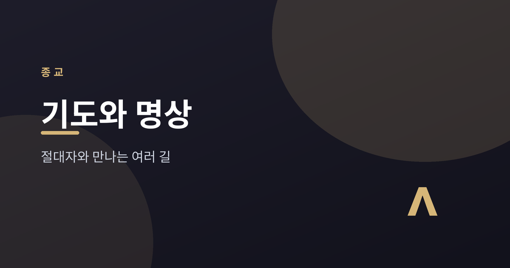
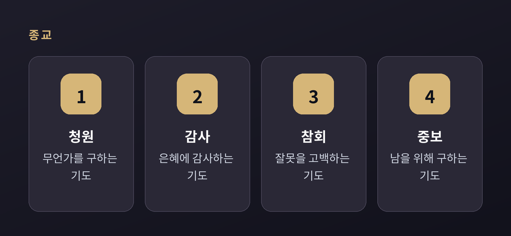
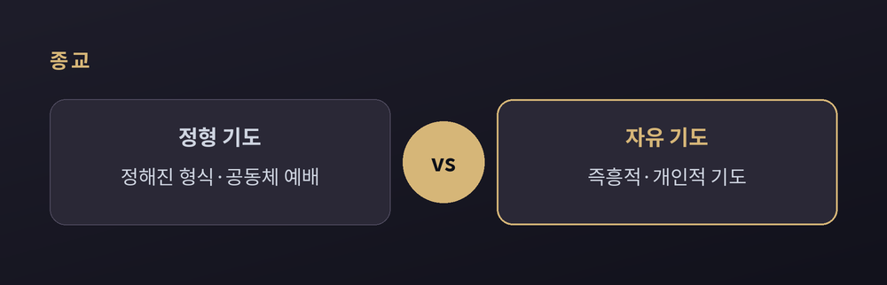
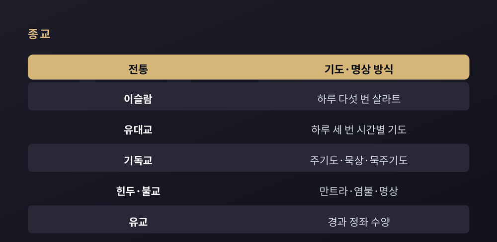
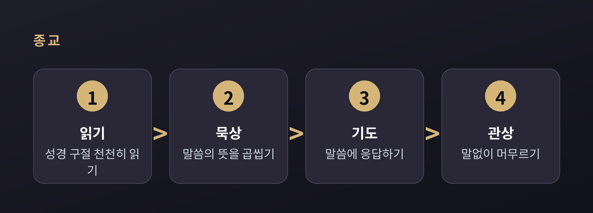

절대자와 만나는 여러 길

이번 글에서는 세계 주요 종교가 기도와 명상을 어떻게 해왔는지 비교종교의 눈으로 정리해 보겠습니다. 특정 신앙을 옹호하거나 비판하려는 글이 아닙니다. 기독교·이슬람·유대교·힌두교·불교·유교가 저마다 '절대자 또는 궁극적 실재'와 만나기 위해 어떤 형태를 다듬어 왔는지, 그 방식만을 차분히 견주어 보려 합니다.
먼저 짚어둘 것이 있습니다. 이 글은 어느 전통의 기도가 더 참되거나 효험이 있다고 판정하지 않습니다. 논쟁적인 지점은 "이런 관점도 있다"는 식으로 병기하겠습니다.
브리태니커는 세계 종교의 기도를 그 기능에 따라 몇 가지 유형으로 나눕니다.
가장 널리 알려진 것이 청원입니다. 물질적이든 영적이든 무언가를 구하는 기도입니다. '기도'라는 말 자체가 '청원'에서 나왔을 만큼, 종교의 역사에서 중심에 있었습니다.
감사와 찬양이 그 곁에 놓입니다. 받은 은혜에 감사하고, 창조된 세계를 준 것을 기립니다. 고대에는 주로 '찬가'의 형식으로 표현되었습니다.
참회는 잘못을 고백하는 기도입니다. 유대교와 기독교에서는 구원의 첫걸음으로 여겨집니다. 흥미롭게도 불교에서도 승려들이 한 달에 두 번, 붓다와 공동체 앞에서 공개적으로 참회한다고 합니다.
여기에 흠숭을 더할 수 있습니다. 흠숭은 무언가를 구하기 이전에, 신 자체를 향해 마음을 낮추고 경배하는 태도입니다. 청원이 '주십시오'라면, 흠숭은 '당신은 크십니다'에 가깝습니다.
중보는 남을 위해 대신 구하는 기도입니다. 연대의 표현인 셈입니다. 고대 바빌로니아에서는 중보 기도를 전담하는 사제단이 세워지기도 했습니다. 오늘날에도 아픈 이웃이나 세상을 위해 드리는 기도가 여기에 해당합니다.

다만 이 유형들은 칼로 자르듯 나뉘지 않습니다. 하나의 기도 안에서 청원이 감사로, 감사가 찬양으로 자연스럽게 흘러갑니다. 브리태니커도 이를 엄격한 분류로 보기는 어렵다고 설명합니다.
기도에는 크게 두 갈래가 있습니다. 정형 기도와 자유 기도입니다.
정형 기도는 정해진 형식을 따르는 기도입니다. 공동체가 함께 드리는 전례 기도가 여기에 속합니다. 축도, 연도, 정형화된 낭송문, 찬가, 영광송 같은 형태가 오랜 세월 다듬어져 왔습니다.
자유 기도는 정해진 문구 없이 즉흥적으로, 개인적으로 드리는 기도입니다. 비정형 기도라고도 부릅니다.
원래 기도는 자발적이고 개인적이었다고 합니다. 그러나 종교가 조직화되면서 전례의 틀과 음악적 표현이 생겨났습니다. 그 결과 오늘날 대부분의 기도문은 반복적이고 고정적인 성격을 띠게 되었습니다.

어느 쪽이 더 참된 기도일까요. 전통마다 강조점이 다릅니다. 정형 기도의 안정감과 공동체성을 귀히 여기는 관점이 있고, 자유 기도의 진정성과 즉흥성을 앞세우는 관점도 있습니다. 종교학은 이 둘을 우열로 가르지 않습니다.
이제 주요 전통을 하나씩 살펴보겠습니다. 같은 '기도'라는 말을 쓰지만, 그 리듬과 몸짓은 사뭇 다릅니다.
이슬람의 살라트는 하루 다섯 번, 시간에 맞춰 드립니다. 새벽의 파즈르, 정오의 주흐르, 오후의 아스르, 일몰 뒤의 마그리브, 밤의 이샤입니다. 예배 전에는 우두라는 세정 의식을 치릅니다. 손을 씻고 입과 코를 헹군 뒤 얼굴과 귀, 팔과 머리, 마지막으로 발을 씻어 몸을 정결히 합니다. 그런 다음 메카 방향을 향해 서기, 굽히기, 엎드리기를 정해진 문구와 함께 반복합니다. 이 한 동작 단위를 라카라 부르며, 예배마다 두 번에서 네 번씩 이어집니다. 이마와 코, 무릎과 손바닥을 바닥에 대고 엎드리는 자세를 수주드라 하고, 이때 "지극히 높으신 나의 주님은 초월하시다"라는 문구를 낭송합니다.
유대교는 하루 세 번, 아침의 샤하리트와 오후의 민하, 저녁의 마아리브를 드립니다. 각 기도에는 이상적인 시간대가 정해져 있어, 샤하리트는 일출 뒤에, 민하는 정오가 지난 뒤에, 마아리브는 밤이 든 뒤에 드립니다. 매일 드리는 가장 중요한 두 기도가 셰마와 아미다입니다. 아미다는 열아홉 개의 축복문으로 이루어져 있고, 이 기도는 서서 드립니다.
기독교에는 예수가 가르친 주기도가 있습니다. 여기에 더해 성경을 놓고 드리는 묵상과 관상의 전통이 깊습니다. 가톨릭 교리서는 그리스도교 기도가 무엇보다 그리스도의 신비를 묵상하려 한다고 말합니다. 묵주로 그 신비를 하나하나 헤아리는 묵주기도도 널리 알려져 있습니다.
힌두교와 불교는 만트라와 명상의 길을 걷습니다. 만트라를 반복해 낭송하는 수행을 자파라 하고, 그 횟수를 세는 108개 구슬 꾸러미가 염주입니다. 108이라는 수는 여러 전통에서 큰 상징성을 지닙니다. 불교에서는 흔히 108가지 번뇌를 이야기합니다. 정토불교의 염불 역시 이런 반복 낭송의 한 형태입니다. 염주를 쓰는 까닭은, 세는 일에 마음을 빼앗기지 않고 그 소리와 뜻에 온전히 집중하기 위해서입니다.
유교는 조금 결이 다릅니다. 인격적 신에게 비는 기도라기보다, 마음을 닦는 수양에 무게를 둡니다. 공경을 뜻하는 경, 그리고 고요히 앉아 마음을 맑히는 정좌가 그 방법입니다.

한 가지 관점을 덧붙이겠습니다. 신유학자들은 자신들의 정좌가 '이 세계를 향해 자기를 완성하는 것'인 반면, 불교와 도교의 명상은 '세계를 잊고 자기를 버리는 것'이라며 구별했습니다. 이는 신유학 측의 관점으로 기록해 둡니다.
전통마다 명상에는 구체적인 절차가 있습니다. 기독교의 렉시오 디비나, 곧 '거룩한 독서'가 좋은 예입니다. 12세기의 귀고 2세가 네 단계로 정식화했다고 전해집니다.
먼저 짧은 성경 구절을 천천히 읽습니다. 다음으로 그 장면 안으로 들어가 뜻을 곱씹으며 묵상합니다. 그리고 그 말씀에 응답하며 기도합니다. 마지막으로 말없이 하느님을 향해 머무는 관상에 이릅니다.

이 네 걸음은 기독교만의 것이지만, 구조는 낯설지 않습니다. 몸과 마음을 한곳에 모아, 정해진 절차를 따라 궁극적인 무언가를 향해 나아가는 흐름. 그 흐름은 여러 전통에서 되풀이됩니다.
몸의 자세와 도구도 이 흐름을 돕습니다. 서는 자세는 유대교의 아미다와 옛 기독교 전통에서 찬양을 표현했습니다. 무릎 꿇기는 기독교에서 겸손과 참회의 몸짓입니다. 엎드리는 부복은 이슬람의 수주드, 정교회의 메타노이아, 힌두교의 부복 의례에 두루 나타납니다. 여러 종교의 자세를 비교한 한 연구에서는, 위로 열린 자세가 찬양 중심의 기도로, 아래로 낮춘 자세가 더 내성적인 기도로 이어지는 경향이 관찰되었다고 합니다.
도구도 비슷합니다. 힌두교와 불교의 염주, 가톨릭의 묵주는 모두 낭송의 횟수를 세며 마음을 붙드는 장치입니다. 세는 일에 신경 쓰지 않고 그 의미와 소리에 집중하도록 돕는 것입니다.
정리하면 이렇습니다. 전통마다 대상도, 몸짓도, 말의 형식도 다릅니다. 유일신을 향한 청원과 응답의 대화가 있는가 하면, 마음을 닦아 실재와 정렬하려는 내면의 수양도 있습니다. 그럼에도 겹치는 자리가 분명히 있습니다. 정해진 시간, 반복되는 낭송, 몸을 낮추거나 여는 자세, 손끝의 구슬. 이 모든 장치가 결국 '집중'과 '지향'을 만들어 낸다는 점입니다.
— 길은 여럿이되, 마음을 한곳으로 모으려는 몸짓은 닮아 있습니다.
어느 길이 옳은지 묻는다면, 이 글은 답하지 않겠습니다. 다만 이렇게는 말할 수 있겠습니다. 사람은 오래전부터, 저마다의 방식으로, 자기보다 큰 무언가를 향해 고요히 마음을 기울여 왔다고 말입니다.